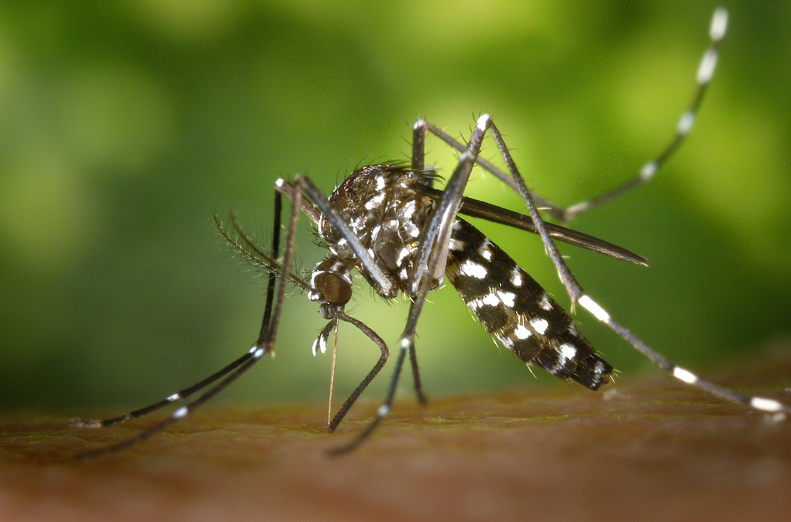

Home
Fun Facts
Why Do We Need Them?
Bite Remedies
Fun Facts About Mosquitoes

WikiImages, Pixabay, Pixabay License
- Only female mosquitoes bite people
Male mosquitoes can live off of plants, but females need to proteins in blood to help them prohduce eggs.
- Their spit causes us to itch
The saliva from the mosquito when it draws our blood triggers a response from out immune system, giving us bump on our skin that's really itchy.
- They LOVE carbon dioxide
Mosquitoes are attracted to carbon dioxide. It is how they locate more bodies to bite.
- There's a lot of them
There are 3000+ species of mosquitoes out in the world. But don't worry, only a couple hundred bite humans. Other species may bite other animals.
- The CDC lists 6 chemicals that can be used to prevent mosquito bites
When getting insect repellent, make sure it contains one of these chemicals: DEET, Picaridin, IR3535, Oil of lemon eucalyptus (OLE), Para-menthane-diol (PMD), 2-undecanone

This work is licensed under a Creative Commons Attribution 4.0 International License.